| 日付 | 2009年10月17日（土） - 2009年10月18日（日） | ||||
|---|---|---|---|---|---|
| 山域 | 日光周辺 | ||||
| メンバー | グループ（男2女2） | ||||
| 山行形態 | 1泊2日無人小屋泊 | ||||
| アクセス | 電車、バス | ||||
| ルート (Map) |
|
女峰山は日光に聳える一際大きな火山だ。
日光といえば男体山が有名だが、その隣に女峰山が横たわっている。
穏やかな山容の男体山に比べ、女峰山は名前から受ける印象とは異なり、
鋭角に聳える荒々しい山容の山で、標高も男体山と3mしか変わらない。
この山は長い間登りたかった山で、昨年の夏、今年の夏と2度計画を立てたが、
いずれも雨で中止になってしまった。この秋、3度目の正直を目指して女峰山に挑むことにする。
1日目
8:58 西参道バス停到着。標高615m。
この時期は紅葉の季節でバスが来ないかもしれないと思っていたが、時間通りにバスは到着。
先週の3連休、いろは坂は大混雑だったらしい。
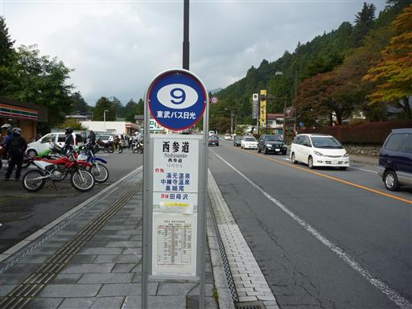
二荒山神社の境内を抜けて、登山道に入っていく。
観光客が大勢いる中、大きなザックを背負って歩いていくのは、かなり周囲から浮いてしまう。
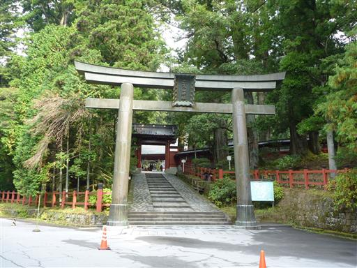
神社の裏から登山道が始まる。神社の近くは巨大な杉が多い。
登山道に入ると周りに人影はなくなる。
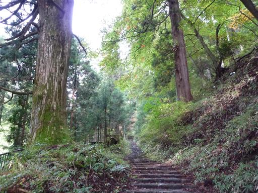
行者堂。ここで道は左右に分かれている。
右の道をとったが間違い。正解は左右どちらの道でもなく、
真ん中の階段を上って建物の裏に続いている。
ここに標識はなく、ものすごく紛らわしい。
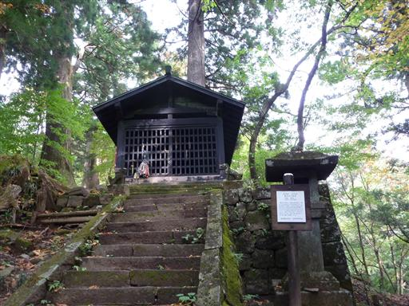
山腹にある石碑。かなり大きな物だ。
女峰山は男体山と並んで古からの信仰の山だった。
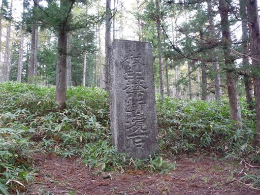
道端にリンドウが咲いている。秋の花の代表だ。
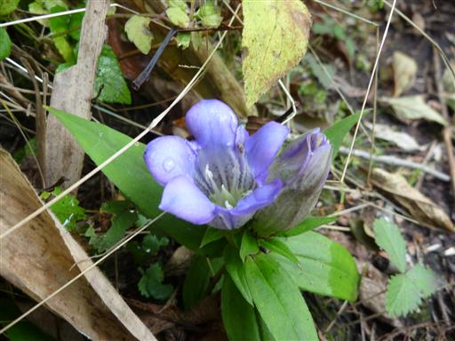
目の前の視界が突然開けて、美しい笹原が広がる。
その遥か彼方に女峰山らしきピークが見えている。
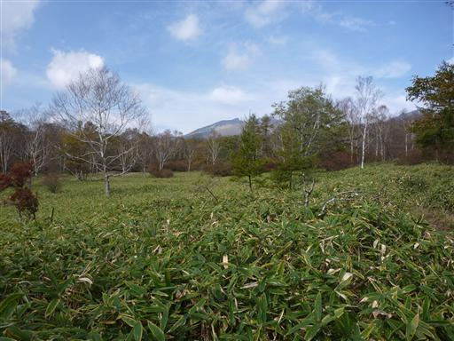
山腹にある水場。水はそこそこ流れている。
本日宿泊する小屋付近にも水場はあるが、時期が時期だけに枯れていないか心配。
念のためここで最低限の水を補給しておく。
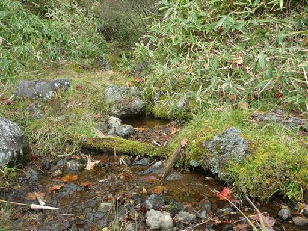
この道は歩く人が少ないのか、笹が登山道に覆いかぶさっていて歩きにくい。
女峰山に登るルートは数多くあるが、この道は神社から通じる一番由緒正しいルート。
標高差は1800mあり、一番長く辛いルートでもある。
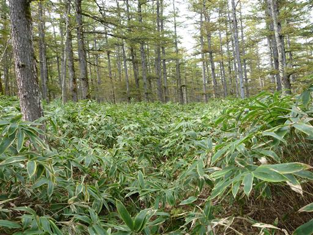
白樺金剛。名の由来はよく分からないが付近に白樺はなく
笹とカラマツしか見当たらない。
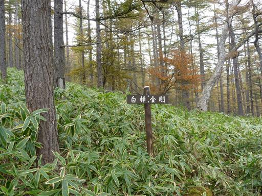
笹原を突っ切ると黒い岩がごつごつしたところに出てくる。
付近は雲に覆われ視界がなくなってきた。
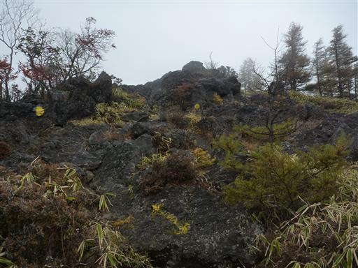
遙拝石に到着。ザックをおろして一服する。
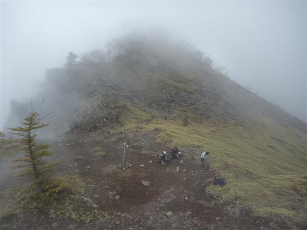
樹林帯の中、どんどん高度をあげていく。
女峰山は展望の良い岩峰というイメージだったが、
山頂付近を除けば深い樹林帯に覆われているようだ。
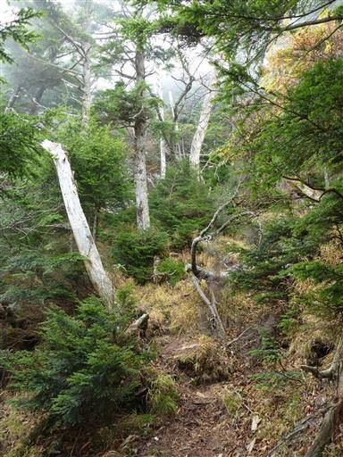
樹林の中から女峰山の山頂部が見えてきた。
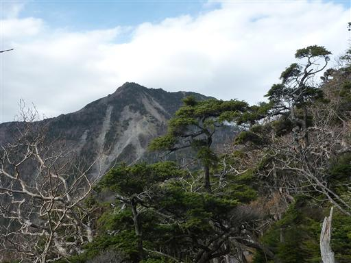
ガレ場を見上げる。上空は再び青空が広がってきている。
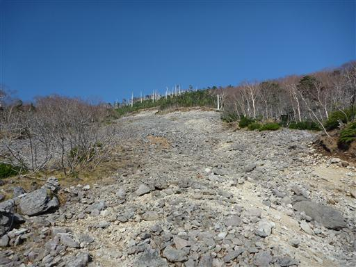
雲の中から3つのピークが姿を見せている。
左から男体山、大真名子山、小真名子山だ。
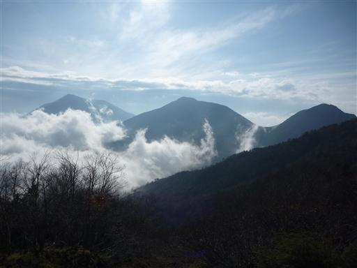
14:59 唐沢避難小屋到着。標高2245m。
日帰りでは難しい山で、避難小屋があるのは非常にありがたい。
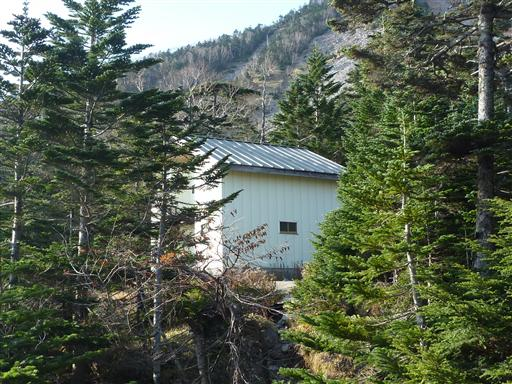
小屋から10分ほど下ったところに水場がある。
水場への道は登山道も兼ねているので、よく整備されていて歩きやすい。
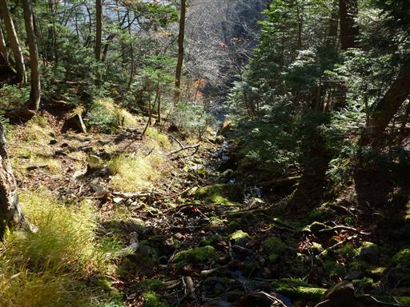
水場。3本のホースから水が勢いよく流れている。
この季節にこれだけ豊富に水が出ているのだから、枯れる事は無いのだろう。
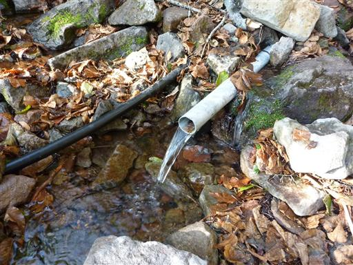
水を汲んで小屋に戻る。意外なことに小屋には先客がいた。
今夜の宿泊は3パーティだったが、比較的大きな小屋なので窮屈感は無い。
古い小屋なのか中はあまりきれいではなく、トイレが無いのが欠点だ。
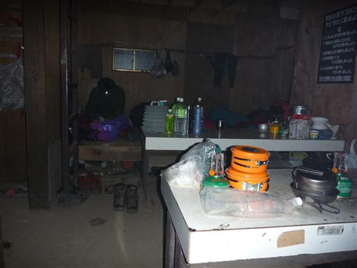